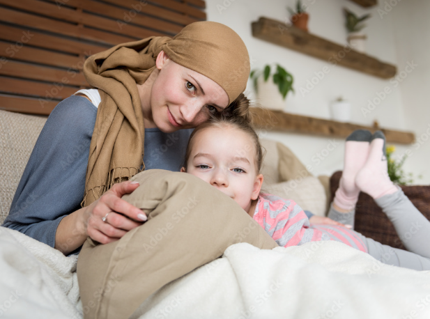
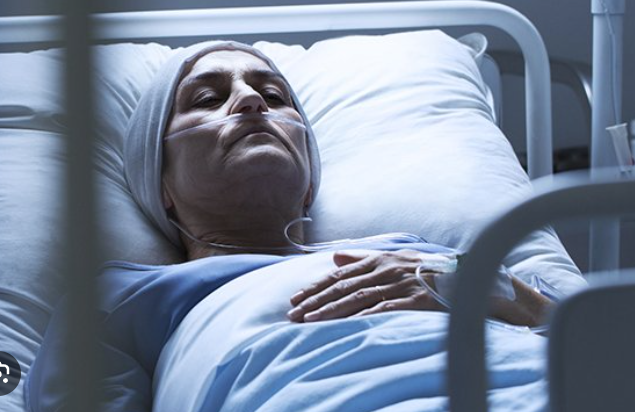
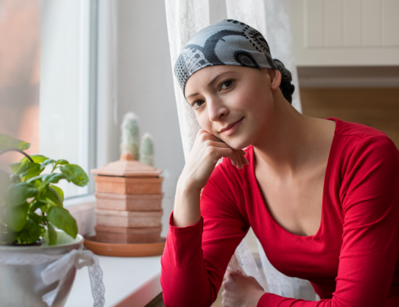
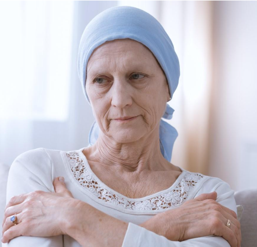
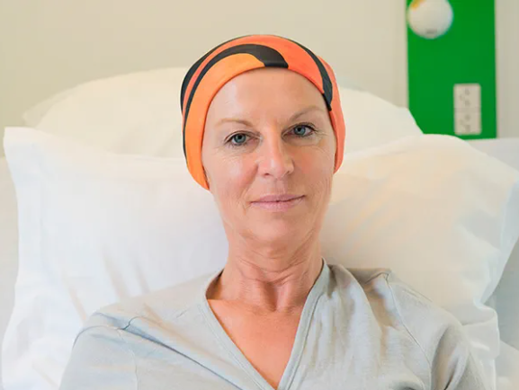
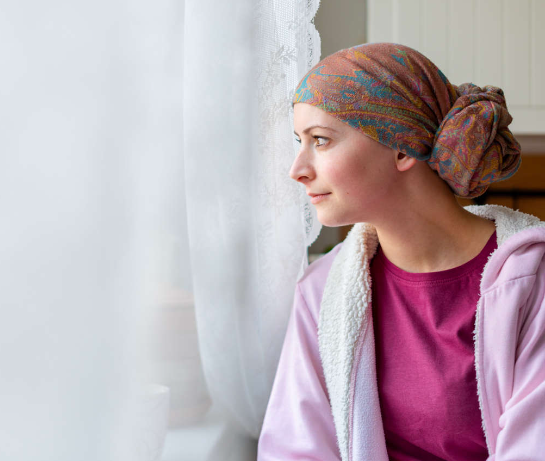
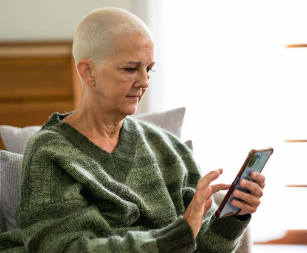
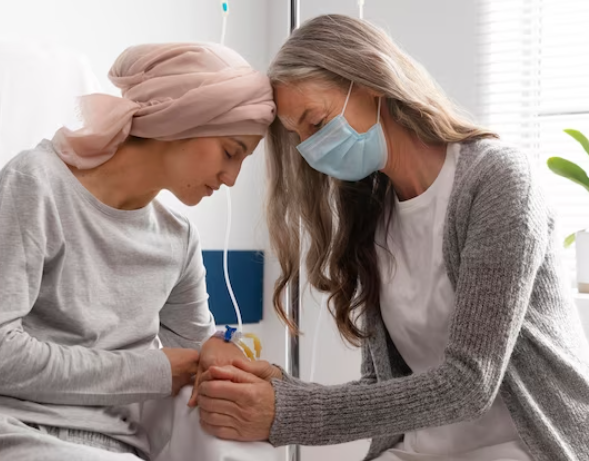
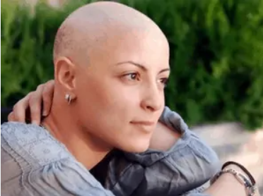
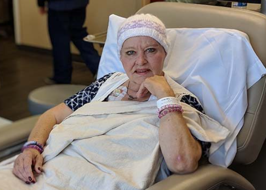

Dikush ka nevoje per ty!

Maria
36 vjec,faza II e kancerit.
- Maria, një nënë 36-vjeçare e dy fëmijëve, është diagnostikuar me kancer në gjoksi. Si një prind i vetëm dhe punëtore e pjesës së kohës, ajo lufton të mbulojë kostot e trajtimit dhe të sigurojë për nevojat e fëmijëve të saj. Ndihma financiare do të lehtësonte shumë barrën për familjen e saj, duke i lejuar të fokusohet në shërimin e saj pa u shqetësuar për llogaritë mjekësore që rriten.

Sarah
45 vjec ,faza III
- Sarah, një mësuese 45-vjeçare, ka luftuar me kancer në vezore për një vit të fundit. Edhe pse ka sigurim shëndetësor, shpenzimet jashtë llogarive për kemoterapinë dhe operacionet e saj kanë zbrazur kursimet e saj. Ndihma me shpenzimet mjekësore do të lehtësonte ngarkesën financiare dhe do të mundësonte që ajo të vazhdojë trajtimin pa frikë nga shkatërrimi financiar.y

Emily
28 vjec,fazaII
- Emily, një dizajnere grafike 28-vjeçare, është diagnostikuar së fundmi me melanomë. Si një punëtore autonome pa sigurim shëndetësor, kostoja e trajtimeve të saj është shqetësuese. Mbështetja financiare do t'i siguronte atë me mundësinë për të marrë kujdesin mjekësor të nevojshëm dhe për të ndjekur terapi alternative që nuk janë të mbuluara nga sigurimi shëndetësor.

Jenica
55 vjec,faza II
- Jessica, një punëtore restoranti 55-vjeçare, përballon një diagnozë të kancerit në mushkëri. Me të ardhura të kufizuara dhe pa sigurim shëndetësor, ajo lufton të paguajë medikamentet dhe vizitat e nevojshme në mjek për trajtimin e saj. Ndihma me shpenzimet mjekësore do t'i lejonte atij qasje në kujdesin që i nevojitet me dëshpërim dhe do të rritë shanset e saj për të mbijetuar.

Rebeca
42 vjec Faza III
- Rebecca, një kontabiliste 42-vjeçare, është diagnostikuar me kancer në qafën e mitrës. Edhe pse ka një punë të qëndrueshme, deduktibilitet e lartë dhe pagesat e bashkëfinancimit të lidhura me planin e saj të sigurimit shëndetësor kanë ndërprerë financat e saj. Ndihma financiare do të lehtësonte barrën financiare, duke siguruar që ajo të mund të paguajë trajtimet dhe të fokusohet në shërimin e saj.

Samantha
33 vjec fazaIII
- Samantha, një artiste 33-vjeçare, ka qenë në luftë me leukeminë për gjashtë muajt e fundit. Si një punëtore autonome me të ardhura të pa rregullta dhe pa sigurim shëndetësor, ajo përballon vështirësi financiare të rëndë për të mbuluar llogaritë mjekësore. Mbështetja me shpenzimet mjekësore do t'i siguronte atij mjetet për të vazhduar trajtimin dhe për të ndjekur një të ardhme plot shpresë./li>

Natalie
50 vjec ,faza I
- Natalie, një punëtore shitëse 50-vjeçare, sapo ka marrë diagnozën e kancerit të pankreasit. Me të ardhura modeste, ajo lufton për të paguar trajtimet dhe procedurat e shtrenjta të nevojshme për kushtin e saj. Ndihma me shpenzimet mjekësore do të lehtësonte shqetësimet financiare dhe do të lejojë që ajo të përparojë shëndetin gjatë këtij periudhe të vështirë.

Olivia
29 vjec,faza II
- Olivia, një studente 29-vjeçare e kohës së studimit, është diagnostikuar me kancer në tru. Si një studente me të ardhura të kufizuara dhe pa sigurim shëndetësor, ajo përballon stres financiar të madh për të mbuluar shpenzimet e trajtimit të saj. Ndihma financiare do t'i siguronte atij mbështetjen e nevojshme për të pasur qasje në kujdes cilësor dhe për të fokusuar në studimet dhe shërimin e saj.

Isabela
49 vjec ,faza IV
- Isabella, një zonjë e biznesit të vogël 48-vjeçare, ka qenë në luftë me kancerin kolorektal për vitin e fundit. Edhe pse ka shpirt ndërmarrës, shpenzimet e lidhura me trajtimin e saj kanë shtrënguar biznesin dhe financat personale të saj. Ndihma me shpenzimet mjekësore do të lehtësonte barrën financiare dhe do të lejojë që ajo të vazhdojë luftën me forcë dhe vendosmëri.

Grace
60 vjec,faza III
- Grace, një pensioniste 60-vjeçare, sapo është diagnostikuar me kancer në mëlçi. Duke jetuar me një të ardhur të fiksuar, ajo lufton për të mbuluar trajtimet dhe medikamentet e shtrenjta të nevojshme për të luftuar kundër sëmundjes së saj. Ndihma financiare do t'i siguronte atij një lehtësim të nevojshëm, duke i lejuar të fokusohet në shëndetin